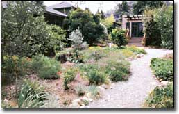
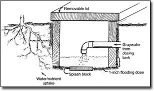
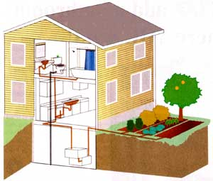
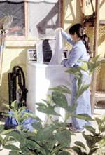

Issue #205 - August/September 2004
Last summer, almost one-third of the United States suffered moderate to extreme drought conditions, leading many counties to limit lawn and garden watering. Water utilities redoubled their conservation education efforts and, in some cities, police fined wanton waterers - folks who surreptitiously sprinkled their lawns despite citywide bans.
Those homeowners probably did not know they had an untapped resource: 1,000 to 1,500 gallons of “graywater” per week are shunted down the drain by an average four-person U.S. household.
This nutrient-laden wastewater from bathroom sinks, showers, bath tubs and clothes washers is a frequently untapped resource for watering gardens, lawns and fruit trees. Graywater does not, however, include toilet wastewater (also known as blackwater), which may contain high levels of bacteria and viruses.
Shades of gray
You can put this gray “gold” to good use in your own landscape. Graywater systems range from the rudimentary - dishpan water used to water trees - to the complex - graywater fixtures connected to a network of pipes in your landscape. Your irrigation needs, budget, and local plumbing and health codes will guide your decision regarding which type you can install.
Graywater systems can be retrofitted to existing plumbing, although the ease with which this is accomplished depends on where your plumbing lies. Homes with basement or crawl-space access to pipes usually are the least expensive to retrofit. Your local plumber can help you determine your home’s suitability and recommend options. If replumbing below floor level is not feasible, consider tapping your clothes washer, and routing that graywater to your thirstiest trees and shrubs. (For more information, see “Graywater Resources,” Page 106.)
Meet your needs
In a household that practices no water conservation, wastewater production from sinks, washing machines and bathroom showers averages nearly 400 gallons per person per week - enough water to maintain a 400- to 800-square-foot flower garden or small orchard. A close examination of your monthly water bills (outside of the irrigation season) can give you a rough idea of how much graywater your household produces. Be sure to subtract about one-third of your total gallons to account for blackwater (if you use a low-flow toilet, subtract about one-quarter). For a more accurate estimate, select the graywater sources you plan to use and use the chart above to determine how much wastewater you produce per week.
Your landscape’s irrigation needs will depend on the area’s climate, soils and plant types. Graywater systems designer and author Art Ludwig says, “Graywater systems are extremely context specific because of the number of variables involved. Each of these variables has the potential to change the design completely.” In all cases, Ludwig counsels homeowners to “choose the simplest design possible and build it the best you can.” (For more details on calculating household graywater production and irrigation needs, we highly recommend Ludwig’s book, Create an Oasis with Greywater; see Page 111 to order.)
Do-it-yourself Options
Landscape-direct is one of the simplest graywater systems. One common example is an outdoor shower built over a semipermeable surface, such as flagstones set in sand, where landscaping techniques are used to direct water runoff to established planter beds. Because wastewater is not discharged into a drain - and may not technically be considered “graywater” - these systems may circumvent plumbing codes.
Branched drain-to-mulch basins, where sloped drains direct graywater to mulch-filled basins planted with fruit trees and other perennials, are another strategy. These systems are simple to build, yet produce great results in the garden and orchard.
In Tucson, Ariz., brothers Brad and Rodd Lancaster send graywater from their washing machine to one of four pipes in their unbranched drain-to-mulch system, manually routing the graywater to planting zones in their back yard (see “Community Conservation,” Page 102). “Every time we do a wash,” Brad says, “we move the washing machine drain hose to the next pipe, which spreads the wealth of graywater around and allows each area receiving graywater to dry out somewhat before the next watering. That way the soil is kept from becoming too saturated with the nutrient-rich graywater, and in turn, any associated odors from stagnant graywater are stymied.”
In the Lancasters’ system, each pipe empties into a subsurface drain (in this case, an upside-down bucket) buried beside a tree.
Empower your flowers
In Jefferson, Md., where freezing conditions are common, Randy and Francy Williams’ graywater disperses to an irrigation trough - a bottomless box with a slate-topped lid that is set at grade along the south side of their house (see above left). Graywater’s embodied warmth and the heat generated by microbial activity in the moist soil protect this system, called a NutriCycle, from freezing, says the designer, John Hanson.
A pump system in the Williamses’ basement delivers 15 gallons of water at a time to shallow troughs in the flower bed outside, where nutrients and moisture are absorbed by the flowers’ roots. Some graywater is transpired through the vegetation, but most, now purified, seeps downward for groundwater recharge.
In Maryland, says Hanson, anyone who has a backup sewage system, such as a traditional septic system, can install this type of setup for about $5,000. The cost includes submitting plans for health department approval, purchasing dosing equipment and installing the trough or chamber. The NutriCycle systems can be used in both new construction and retrofit situations.
“If an existing house has a failing septic system, a homeowner can install our combination system (a composting toilet and graywater irrigation troughs),” Hanson says. “In this case, failing septic systems can usually be abandoned completely, and the homeowner can have a good, healthy graywater system that lasts almost forever.”
The Williamses say it “just makes good ecological sense” to use wastewater productively. The past two summers, their graywater has grown a bumper crop of sunflowers that draws birds of all shapes and sizes to their garden.
Greenhouse graywater
Graywater greenhouses, in which graywater is routed to soil beds inside an attached sunspace or other structure, are another graywater strategy especially suited to cold climates. Greenhouse plants’ irrigation needs are fairly regular and well-matched to the virtually constant supply of household graywater.
Faced with spending $12,000 to $15,000 on a mound septic system, Duluth, Minn., homeowners Cindy Hale and Jeff Hall decided to put their wastewater to work instead. In 1999, they obtained an experimental septic system permit from the county health department to install a graywater greenhouse and composting toilet on their rural property.
Designed by the Community Eco-Design Network of Minneapolis and architect Roald Gundersen, formerly a project architect of Biosphere 2 (a glass-enclosed ecological system in Oracle, Ariz.), the couple’s superinsulated solar greenhouse contains six planter beds watered by two rainwater cisterns and a graywater collection tank set in the floor.
Household graywater from the bathroom and kitchen sink drains into the holding tank. A pump delivers a measure of graywater to the beds at least once every 24 hours, helping prevent the buildup of fetid water. Drain tile distributes graywater to the 9-by-3-by-3-foot planting beds, which consist of a 36-inch layer of sandy loam over a layer of 12-inch-deep compacted sand. At some point, the soil may become too saline from the buildup of graywater salts and may need to be flushed or replaced, Hale says, but so far they’ve had no indication of such problems, even after five years of intense use.
“We have fresh greens, vegetables and flowers all winter,” she says. “You need to do research to select things that will do well in the cool, low-light environment [of a Minnesota winter], but there are lots of options.”
The grass is always greener
Most graywater systems are designed to disperse water to discrete areas in the landscape - a fruit-tree basin, a bed of wildflowers. But if you have more lawn than garden or orchard, you still can put your graywater to use and whittle down your water bills. Subsurface drip irrigation systems are at least 30 percent more efficient than watering lawns with sprinkler systems. The ReWater System out of Chula Vista, Calif., for example, routes graywater from drains to a small tank or “drum” equipped with a pump that sends the graywater to a sand-filled filter. The filter snags line-clogging debris and sends the water to irrigation lines buried 9 inches below the lawn’s surface. At this depth, the benefits of microbial activity are maximized while the risks of ponding and runoff are minimized. In colder climes, this depth also prevents lines from freezing in winter.
Costs & Savings
Branched drain-to-mulch basins are the most affordable option beyond the ultra-basic landscape-direct method. Drain-to-mulch basins provide automated distribution of graywater to plants without the need for the filtration, surge tanks or pumps that other systems use. These systems can be built by a homeowner for a few hundred dollars in off-the-shelf components.
More-involved, whole-household graywater systems are best incorporated during a home and landscape’s design phase, when drain pipes can be sited for best accessibility and location, with irrigation areas situated downhill from graywater sources. Depending on the regulations in your area, two separate systems - one for blackwater, one for graywater - may have to be installed. In lieu of installing a full graywater system at the time of construction, you can “stub out” a system - provide the piping but cap the ends until you are ready to complete the system. Farmington, Ga., straw bale homeowners Elise Lang and Michael Pierce designed their system accordingly, anticipating that local building code officials eventually will permit graywater for use on their fruit trees and other landscape plants.
Graywater systems can be considered a long-term investment in the future, when both water and energy prices are certain to rise. Upfront costs for legally permitted systems hinge on the complexity of the system installed. The cost of Hale and Hall’s graywater greenhouse and composting toilet system in Minnesota is similar to a conventional septic system, but, Hale says, instead of a “bump in the ground,” they have a productive growing space. NutriCycle Systems’ box trough costs $5,000, while ReWater’s subsurface drip irrigation system carries a $2,000 to $3,000 price tag.
Steve Bilson of ReWater Systems says at least half of his system’s cost can be recouped in sewage-fee savings over the 20-year life of the graywater system. And this, he says, doesn’t even factor in savings from reduced use of municipal water for landscape irrigation.
When used in concert with a septic system, graywater systems can significantly extend the life of the leachfield and reduce the need for frequent sewage pumping. “Replacing a leachfield that’s become clogged with organic matter can total thousands of dollars,” Bilson says. “By using a graywater system, you remove about 15 percent of the solids - like sloughed-off skin cells and fine particles of clothing - increasing the life of your leachfield system significantly.”
Safety Issues
If you compost your food scraps, don’t use a garbage disposal and avoid chlorine and other harsh chemicals, you can safely reuse all your graywater. Remote risks of disease transmission can be minimized by using a system that keeps the wastewater below the soil surface.
To date, no cases of disease transmission through contact with graywater have been reported. For safety’s sake, experts recommend discontinuing graywater irrigation if a family member becomes ill with a communicable disease (such as hepatitis, flu or measles) and diverting the graywater into the sewer until the affected person is well. Some experts caution against using graywater to irrigate garden vegetables, especially root crops that can come in contact with the graywater.
A 1992 study on subsurface graywater irrigation systems conducted by the city of Los Angeles showed “no significant increase in the number of dangerous bacteria in the soil,” and concluded that the background numbers of these bacteria in the natural environment far exceed the bacteria dispersed by graywater.
“Much has been made over the potential health risk of graywater use,” says graywater expert Ludwig, “without comparing the actual risk from the common practice of sewage disposal in waters used for swimming, drinking and fishing.” He says about one in five U.S. communities uses only primary sewage treatment - only removing solids - before discharging downstream. In contrast, responsibly managed graywater systems can effectively turn a former waste product and potential pollutant into a landscape resource. Letting graywater slowly percolate through the topsoil gives microorganisms time to devour dissolved solids, salts and potential pathogens, and helps to ensure purification.
Rules & Regulations
Regulations governing residential graywater systems vary from state to state and from region to region. To determine what systems, if any, are permissible in your area, consult with your county health department, and your local building or plumbing authorities. Locations lacking specific graywater guidelines may permit new systems under an “experimental systems” clause.
Arizona, New Mexico and California have rules governing residential graywater systems, and Bilson says his company has met little resistance installing systems in two other states, Nevada and Utah. “Most states have some sort of graywater code on the books,” he says. “In the case of Nevada, it’s just one short paragraph, so officials don’t have much to go on, except to permit a system as experimental. California has the most comprehensive rules, with a 14-page code.”
Bilson recommends that clients outside of California show how their system meets California’s strict compliance code to satisfy their local officials. “[The permit agents] usually are very impressed that you’ve done your homework and are very likely to permit a system that meets the restrictive guidelines of the California code.”
Ludwig says Arizona has a reasonable and user-friendly regulatory stance. One of the few states to actively encourage residential graywater reuse, Arizona offers guidance to homeowners interested in using graywater. The state’s Department of Environmental Quality (ADEQ) pamphlet Using Gray Water at Home presents 13 Best Management Practices, which outlines proper uses and distribution of graywater. (See “Graywater Resources,” Page 106.)
Should You Go Gray?
Ludwig says if a sewer is like dumping all your cast-offs in one garbage can, a graywater system is like sorting them into separate recycling bins: Properly functioning graywater systems take some owner involvement, maintenance and care. So, a graywater system is not for everyone. Folks who have small yards or poorly drained soils, and those who have no irrigation needs, may not reap the economic and ecological benefits of reusing wastewater in the landscape.
If you’re considering a graywater system as a step toward a “greener,” more ecofriendly home, you also should weigh the environmental costs of the materials - pumps, valves, fittings, filters and electricity - versus the environmental savings of conserving water. Systems that use lots of materials and electricity may more negatively impact the environment than just sending graywater down the drain. Users should keep an eye on both the ecological and economic balance sheets when selecting a system.
Graywater’s rewards - a lush landscape in the midst of drought, a bounty of fresh vegetables in the middle of winter - may be well worth the extra effort, though.“We absolutely love the system,” Cindy Hale says, “and can’t imagine life without our graywater.”
Mother Earth News Contributing Editor Claire Anderson reports on sustainable household systems across the United States.
Community Conservation
Quenching their fruit trees’ thirst with rainwater and graywater during the winter in Tucson, Ariz., was no problem for brothers Brad and Rodd Lancaster. But once the dry and dusty days of summer rolled around, water from the weather and washer wasn’t enough, and the brothers were forced to tap into the municipal “trough.”
“We just didn’t do laundry often enough to keep the trees thriving in dry times,” Brad says. “Then it dawned on us that many of our neighbors did not have washing machines, and they were spending a fair amount of time bicycling or driving to a distant laundromat where all the graywater from their washes went wastefully down the sewer.”
The brothers first approached their more environmentally minded neighbors with this deal: For the same price the commercial laundromat charged, neighbors could wash their clothes in the Lancasters’ washer and be spared the hassle of trucking their clothes across town. Along with clean clothes, users also could have their pick of the fruits produced from their graywater’s labor - oranges, figs and peaches from the brothers’ yard.
Initially, a few neighbors tried the plan; now, seven households use the backyard laundromat. The brothers funnel profits into system maintenance and improvements: Their plans include increasing their roof-water harvesting to provide more rainwater - rather than tap water - for wash water, and their photovoltaic (solar-electric) system has recently been updated to power the machine.
One of the best benefits goes way beyond duds and suds, Brad says. “We’re strengthening community ties with more positive interactions among more neighbors, and we are all helping conserve the community’s drinking water. Those using our system are getting exposed to, and are then spreading, various water-conserving and harvesting strategies in their homes, and to their friends and family.”
Visit www.HarvestingRainwater.com for more information on the brothers’ program and on Brad’s upcoming book, Rainwater Harvesting for Drylands.
Choose Ecofriendly Soap
When you use your graywater for irrigation, avoid using laundry detergents that have high levels of salts, including sodium and boron. Over time, these ingredients can accumulate in the soil and interfere with your plants’ growth.
Some detergents are high in salts; others are quite low. Unfortunately, you can’t tell which ones are safe just by looking at the labels. The only comparison information we can locate is from a 1992 study by the Office of Arid Land Studies at the University of Arizona; it indicated the following liquid detergent brands as good choices for graywater systems: Alfa Kleen, Bold, Ecover, ERA Plus, Oasis, Shaklee and Yes.
Oasis detergent is specifically designed for use with graywater systems [(800) 225-2855; www.bio-pac.com], and EnviroRite Laundry Detergent [(888) 350-8551; www.envirorite.com ] provided lab results with salt levels that are well within the range for successful graywater use.
If you prefer to use your favorite brand, send a sample of the detergent’s resulting wash wastewater to a lab that tests irrigation water for farmers. They can run the tests needed to determine if the water will be safe to use on your plants. The boron levels should be below 0.1 mg per liter, and sodium should not exceed about 40 mg per liter, which is equivalent to the sodium in many tap water sources. Also make sure your detergent is free of chlorine bleach.
Because they are used in such small amounts, most liquid bath products, shampoos and dish soaps pose little harm to plants that are irrigated with graywater. - Mother
Graywater Resources
PUBLICATIONS
Create an Oasis with Greywater;
Builder’s Greywater Guide and Branched Drain Greywater Systems All of the above by Art Ludwig.
To order, see Page 111 or visit www.oasisdesign.net/catalog
Using Gray Water at Home
Arizona Department of Environmental Quality
www.adeq.state.az.us/environ/water/permits/download/graywater.pdf
Installing and Planting
Your Washwater Garden
EcoWaters Projects (978) 318-7033 www.ecowaters.org
Rainwater Harvesting for Drylands by Brad Lancaster
To order, visit www.HarvestingRainwater.com
Reusing the Resource: Adventures in Ecological Wastewater Recycling
by Carol Steinfeld and David Del Porto
SYSTEM DESIGNERS
NutriCycle Systems
(301) 371-9172
Jefferson, Md.
www.nutricyclesystems.com
ReWater Systems, Inc.
(619) 421-9121
Chula Vista, Calif.
www.rewater.com
|
 This handsome garden in Santa Barbara is a state of California graywater test site. The garden’s fruit trees and perennials have benefited from trouble-free graywater irrigation for almost 20 years. |
 In areas where freezing conditions are common, irrigation trough graywater systems include bottomless boxes with slate-topped lids set at grade along planting beds. |
 In this graywater system, wastewater from the drains shown in brown flows through a filtration and pumping system in the basement to landscape plants outside. Graywater systems can be designed to recycle most household wastewater, with the exception of blackwater from toilets, which must flow to a sewer system or septic field. |
|
 |
|
|